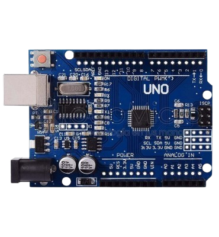
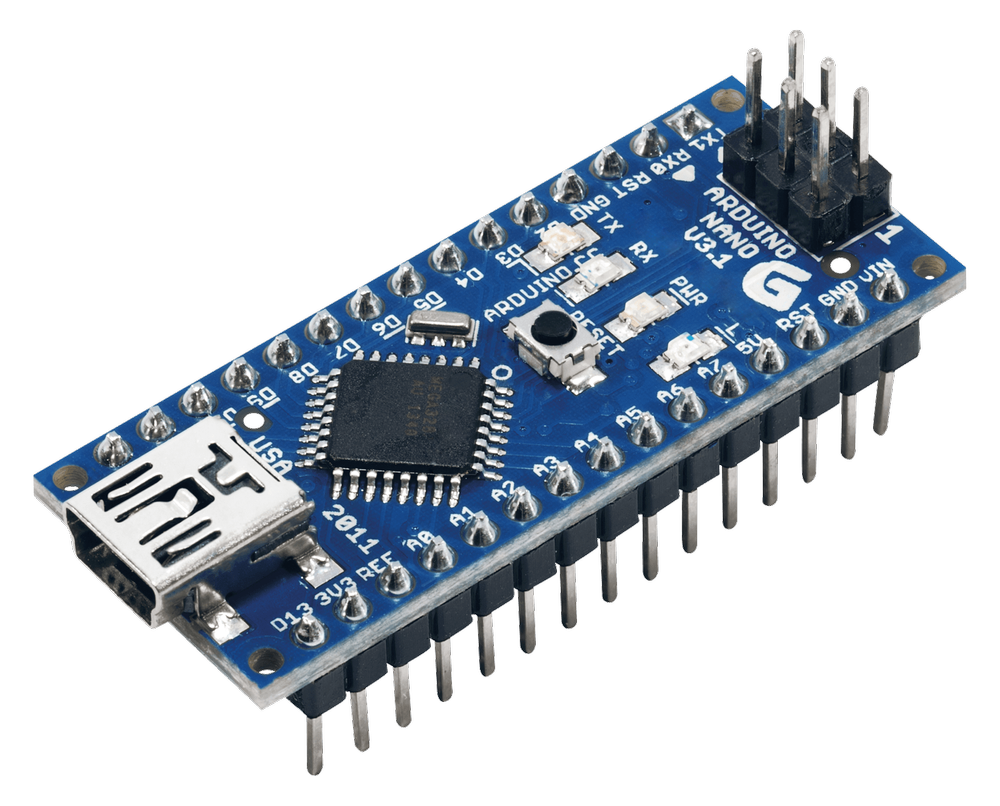
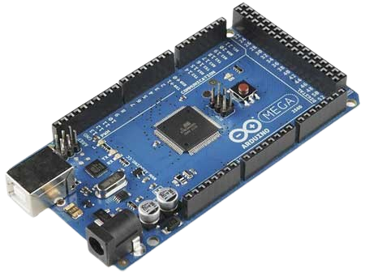
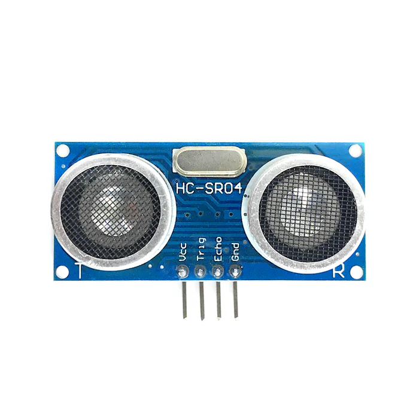
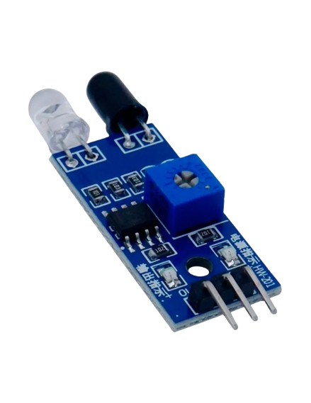

Arduino
Arduino es una plataforma de prototipado electrónico de código abierto basada en hardware y software fáciles de usar. Está diseñada para que los artistas, diseñadores, aficionados y cualquier persona interesada en crear proyectos interactivos puedan hacerlo de manera sencilla.
Arduino es una placa de circuito impreso que contiene un microcontrolador programable. Viene con un entorno de desarrollo integrado (IDE) que permite escribir y cargar código en la placa. Arduino es conocido por su simplicidad y accesibilidad, lo que lo convierte en una opción popular para principiantes y expertos por igual.
Arduino se utiliza en una variedad de aplicaciones, incluyendo:
Para comenzar con Arduino, necesitarás una placa Arduino (como el Arduino Uno), un cable USB para conectarla a tu computadora, y el software IDE de Arduino, que puedes descargar desde el sitio web oficial de Arduino. Una vez que tengas una placa.
Es la placa más popular de Arduino, reconocida por su simplicidad, tamaño estándar y compatibilidad. Se diferencia porque usa el ATmega328P, tiene 14 pines digitales y 6 analógicos, y es la base de la mayoría de tutoriales y shields, lo que lo convierte en la opción ideal para empezar.
El Arduino Nano es una placa compacta con el microcontrolador ATmega328P, similar al Uno pero más pequeña, se alimenta y programa por mini/micro USB y ofrece 14 pines digitales y 8 analógicos, su diseño permite montarlo en protoboards, ideal para proyectos portátiles y de poco espacio.
El Arduino Mega es una placa más grande y potente que el Uno y el Nano, diseñada para proyectos que requieren muchos recursos, funciona con el microcontrolador ATmega2560, que le brinda 54 pines digitales, 16 entradas analógicas y 4 puertos seriales, mucho más que otros modelos. Por su capacidad, se usa en proyectos avanzados como impresoras 3D, sistemas de robótica y automatización.
se utiliza para medir distancias mediante ondas de sonido de alta frecuencia. Funciona enviando un pulso ultrasónico desde el pin Trigger y recibiendo el rebote en el pin Echo, calculando el tiempo que tarda en regresar. Es muy usado en proyectos de robótica, alarmas y sistemas de detección de obstáculos por su bajo costo y buena precisión.
Detecta la presencia de objetos o mide distancias usando luz infrarroja. Emite un rayo IR y recibe la señal reflejada para detectar obstáculos o cambios de color. Se utiliza en robots seguidores de línea, controles remotos y sistemas de detección de proximidad.
La programación en Arduino se basa en un lenguaje derivado de C/C++, diseñado para ser fácil de usar y entender. Todo programa en Arduino se llama sketch y tiene principalmente dos funciones obligatorias: setup() y loop(). La función setup() se ejecuta una sola vez al iniciar la placa y sirve para configurar pines, inicializar variables, establecer la comunicación serial o preparar librerías; por ejemplo, pinMode(13, OUTPUT); configura el pin 13 como salida. La función loop() se ejecuta de manera repetitiva mientras la placa esté encendida, y dentro de ella se colocan las instrucciones que queremos que se repitan, como encender y apagar un LED con digitalWrite(13, HIGH); delay(1000); digitalWrite(13, LOW); delay(1000);. Además de estas funciones básicas, Arduino permite crear funciones propias, que son bloques de código reutilizables que ayudan a organizar programas más complejos, y librerías, que agregan funcionalidades como controlar sensores, motores o pantallas sin escribir todo desde cero. Se usan también entradas y salidas analógicas (analogRead(), analogWrite()) para manejar sensores que devuelven valores variables, y comunicaciones seriales (Serial.begin(), Serial.print()) para enviar y recibir datos con la computadora o entre placas. Gracias a estas herramientas, la programación en Arduino combina control de hardware y lógica de software de manera intuitiva, permitiendo desde proyectos simples como un semáforo hasta sistemas complejos de robótica y automatización.